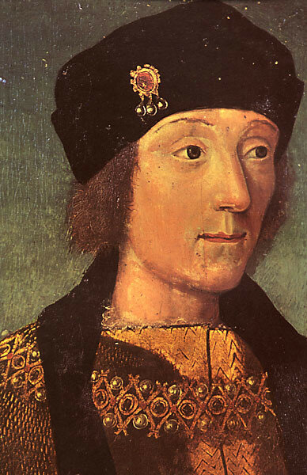
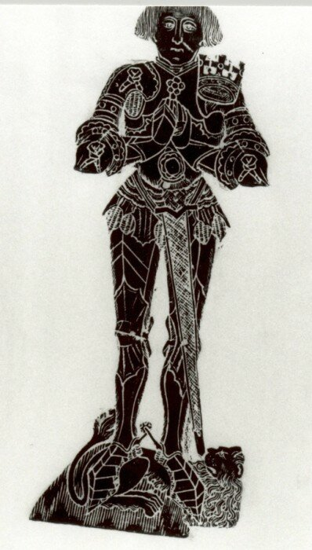

Гарри, король английский, покинул столицу и двор,
Он держит путь в Саутгемптон, он мчится во весь опор.
Спешит он в гавань проверить, пришла ли уже назад
Его «Неприступная Мэри» и как за ней приглядят.
Никто из придворных не ведал, куда направился он,
И лишь один Лорд Арундель был в тайну посвящен.
В старом камзоле, в потертых штанах король покинул дворец,
Сверху прикрывшись грубым плащом, словно простой писец.
Он в Хэмелл успел до прилива и полюбоваться мог,
Как «Неприступную Мэри» на зиму ставят в док.
И мачты, и снасти – все было при ней, и новенький такелаж;
И тут корабельщики жадной толпой ринулись на абордаж.
Они срубили грот-мачту из лучшей в мире сосны —
Списали все на погоду: мол, бури были сильны.
Они распилили мачту, чтоб растащить по домам
И сделать кровати женам своим, и дочкам, и сыновьям.
Один известный мошенник, по имени Слингавей,
Забрался в камбуз и ну вопить: «Эй, братцы, сюда, живей!
Вот ведь беда-то: ужасный шторм, что мачту с палубы смёл,
Унес все чашки и плошки, и этот медный котел!»
Напялив на голову котел, он вылез, довольный собой,
А прочие кинулись в кубрик поживы искать даровой.
Лишь йомен один, Боб Бригандин, чужим добром не прельстясь,
Схватил мошенника за грудки – и бросил прямо в грязь.
«И я брал гвозди, пеньку и лес, и я не безгрешен сам,
И я надувал таможню – но грабить казну не дам!
Нет в нашем деле чистых рук, но помни, негодяй:
Всему на свете мера есть – воруй, но меру знай!»
«Спасибо, йомен», – сказал король, откинув капюшон,
Достал из-за пазухи свисток и трижды свистнул он.
Тут подоспел лорд Арундель, за ним скакали вслед
Почтенный мэр Саутгемптона и весь городской совет.
С чашками, ложками, плошками выволокли на бак
Всех остальных мошенников – и привязали так.
Но пожалел милосердный король их малых чад и жен,
Дать приказал Слингавею плетей, а прочим – убраться вон.
Потом подозвал Бригандина король – и без лишних слов
Йомена он назначил смотрителем всех судов.
«Нет в вашем деле чистых рук, но помни всякий раз:
Берешь – бери, да меру знай! Вот мой тебе наказ».
Храни Господь корабли в портах и те, что в морской дали:
«Фортуну», «Бристоль» и «Благодать», и прочие корабли,
И «Неприступную Мэри», и весь королевский флот,
И Гарри, который мир наш хранит и меру во всем блюдет!
King Henry VII and the Shipwrights
(A.D. 1487)
HARRY, our King in England, from London town is gone,
And comen to Hamull on the Hoke in the Countie of Suthampton.
For there lay the Mary of the Tower, his ship of war so strong,
And he would discover, certaynely, if his shipwrights did him wrong.
He told not none of his setting forth, nor yet where he would go,
(But only my Lord of Arundel) and meanly did he show,
In an old jerkin and patched hose that no man might him mark.
With his frieze hood and cloak above, he looked like any clerk.
He was at Hamull on the Hoke about the hour of the tide,
And saw the Mary haled into dock, the winter to abide,
With all her tackle and habilaments which are the King his own;
But then ran on his false shipwrights and stripped her to the bone.
They heaved the main-mast overboard, that was of a trusty tree,
And they wrote down it was spent and lost by force of weather at sea.
But they sawen it into planks and strakes as far as it might go,
To maken beds for their own wives and little children also.
There was a knave called Slingawai, he crope beneath the deck,
Crying: “Good felawes, come and see! The ship is nigh a wreck!
For the storm that took our tall main-mast, it blew so fierce and fell,
Alack! it hath taken the kettles and pans, and this brass pott as well!”
With that he set the pott on his head and hied him up the hatch,
While all the shipwrights ran below to find what they might snatch;
All except Bob Brygandyne and he was a yeoman good,
He caught Slingawai round the waist and threw him on to the mud.
“I have taken plank and rope and nail, without the King his leave,
After the custom of Portesmouth, but I will not suffer a thief.
Nay, never lift up thy hand at me—there’s no clean hands in the trade.
Steal in measure,” quo’ Brygandyne. “There’s measure in all things made!”
“Gramercy, yeoman!” said our King. “Thy council liketh me.”
And he pulled a whistle out of his neck and whistled whistles three.
Then came my Lord of Arundel pricking across the down,
And behind him the Mayor and Burgesses of merry Suthampton town.
They drew the naughty shipwrights up, with the kettles in their hands,
And bound them round the forecastle to wait the King’s commands.
But “Sith ye have made your beds,” said the King, “ye needs must lie thereon.
For the sake of your wives and little ones—felawes, get you gone!”
When they had beaten Slingawai, out of his own lips
Our King appointed Brygandyne to be Clerk of all his ships.
“Nay, never lift up thy hands to me—there’s no clean hands in the trade.
But steal in measure,” said Harry our King. “There’s measure in all things made!”
God speed the Mary of the Tower, the Sovereign, and Grace Dieu,
The Sweepstakes and the Mary Fortune, and the Henry of Bristol too!
All tall ships that sail on the sea, or in our harbours stand,
That they may keep measure with Harry our King and peace in Engeland!
